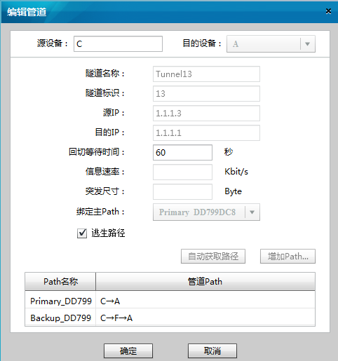

编辑管道
操作步骤
进入定义管道对话框
进入增加管道对话框有两种方式，选择其中一种来操作即可。
在“Aglie TE View”页面选择“菜单 > Service > 定义管道”。
在源设备图标上单击鼠标右键，选择“定义管道”。
在“管道定义”对话框中选择要编辑的管道，点击“编辑”。
弹出“编辑管道”对话框，按照重新规划的数据进行相应的编辑。

点击“确定”完成管道编辑的操作。
父主题：
定义管道
华为专有和保密信息
版权所有 © 华为技术有限公司